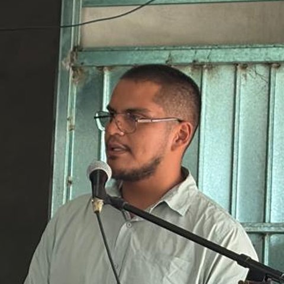
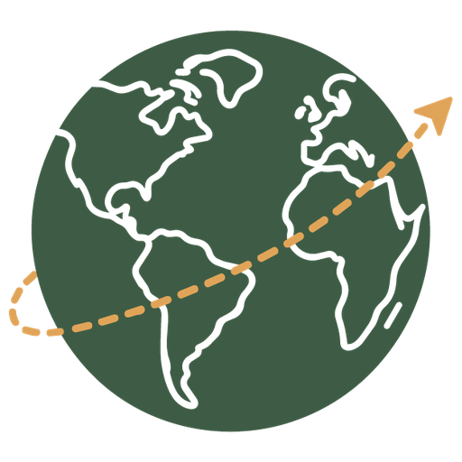

Misión Campamento Brittney
Costa Rica · Enero 2027
¿Para qué es?
Vamos a Costa Rica a servir en el Campamento Brittney, que atiende a cientos de niños de escasos recursos.
Estamos recaudando el dinero para los boletos de avión de los integrantes del grupo. Cada donativo, grande o pequeño, nos acerca a la meta.
Si no puedes donar, también nos ayudas orando por el viaje y compartiendo esta página.
Conoce el Campamento Brittney Sitio oficial, en inglés
Así vamos
Recaudado
$1,850 MXN
0%de la meta
Donativos por transferencia
- CLABE
- 722 969 01602597906 6
- Beneficiario
- Jose Maria Perez Jimenez
- Institución
- Mercado Pago W
Responsable

Encargado: Chema
Hola, soy Chema. Tengo 26 años y desde hace casi tres años decidí vivir para la obra de Cristo a tiempo completo.
- Estudié dos años en el Instituto Bíblico Palabra de Vida México.
- Con el instituto participé en viajes misioneros a Tamaulipas y Orizaba.
- He servido con el ministerio “Happy Feet”.
- Hoy sirvo en mi iglesia local y soy el líder encargado de este viaje a Costa Rica.
¿Quieres más información o saber cómo orar por nosotros? Escríbeme por Instagram en @enviados.cvc.
Integrantes del grupo
Síguenos en Instagram

@enviados.cvc